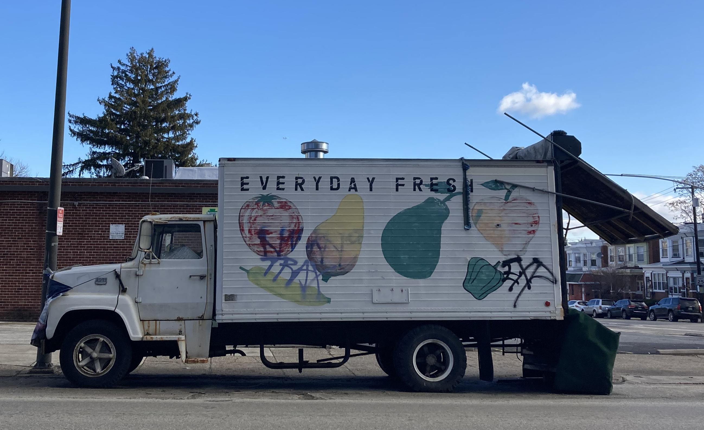
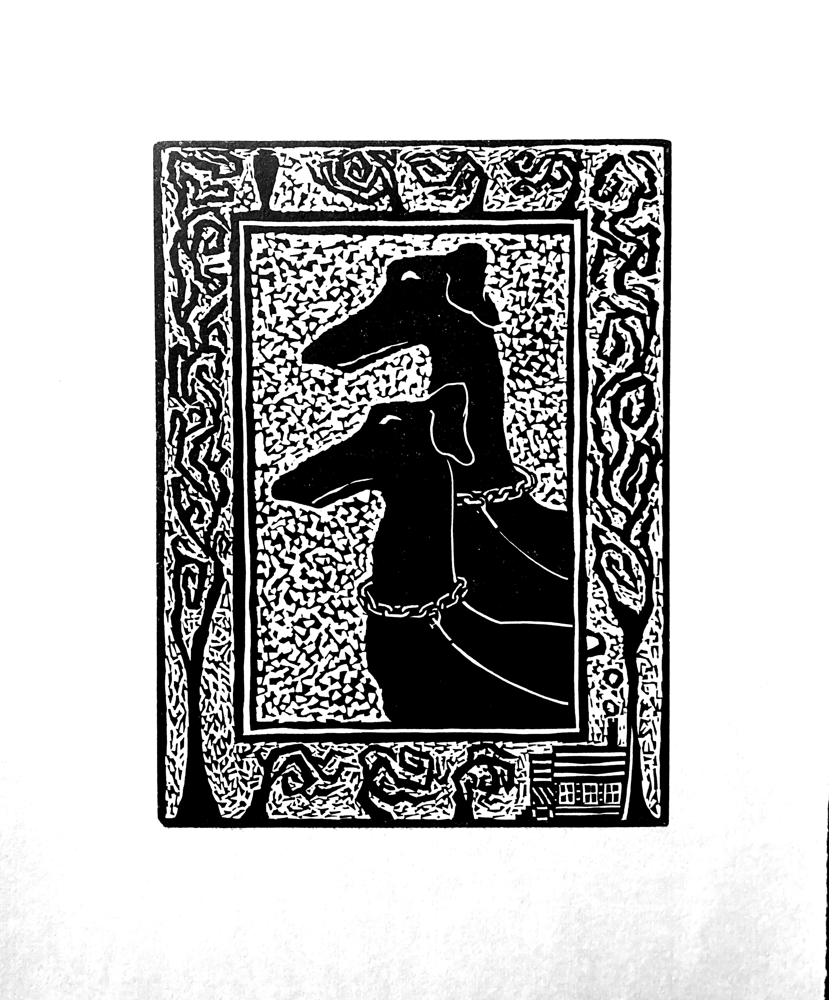
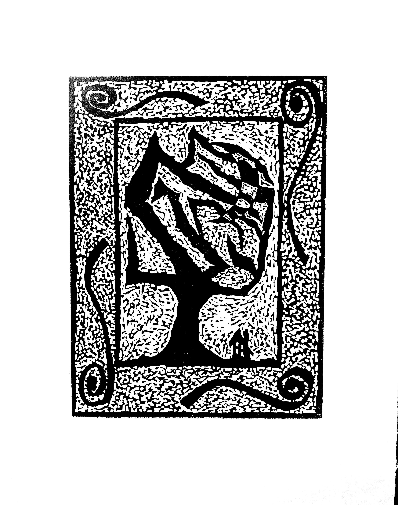
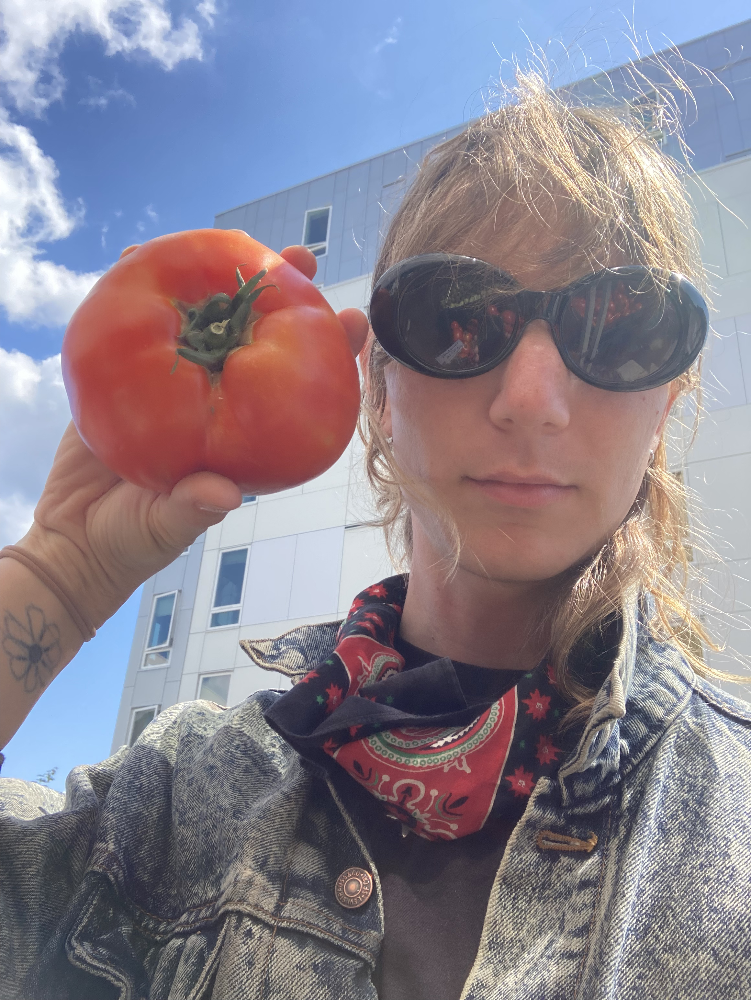

{kind=link}

Welcome
to
? my newsletter ?
the very first one!
~~~~~~~~~~~~~~~~~~~~~~~~~~~MAJOR UPDATES!~~~~~~~~~~~~~~~~~~~~~~~~~~~
THE HEART IS A TUMBLEWEED
Around this time last year I was preparing to move across the country, Seattle to Philadelphia. I was taking things to storage. Packing up everything I planned to come back for.
I started getting up very early, driving my car through the dense wintery fog to Discovery Park. I would run around the park. I would run up the hills and the wet wooden stairs as fast as I could.
Often I ended up taking a break under a tree by the cliff that overlooks the Sound. I remember sitting here with friends. I can't remember who exactly but I know there's been several different
times and the memories are all blending together. Every where I go in this park I am reminded of something. I'm climbing a different tree - the big one by the stairs - in a picture on an old phone of mine
that won't turn on anymore. Years later, I dropped a different phone in that patch of tall grass one night and found it soaked in dew at 4 am the next morning.
Now I'm in Philly.
I'm still using the phone that spent the night in Discovery Park.
~~~~~~~~~~~~~~~~~~~~~~~~~~~~~~~~~~~~~~~~~~~~~~~~~~~~~~~~~~~~~~~~~~~~~~~~~
~~~~~~~~~~~~~~~~~~~~~~~~~~~~~~~~~~~~~~~~~~~~~~~~~~~~~~~~~~~~~~~~~~~~~~~~~
OFFICIALLY A PRINT FELLOW
In the fall of 2024 I began a print fellowship at The Soapbox here in Philly. I have been training on their presses and learning a lot!
Here are a few linos I carved in October & printed earlier this month on the vandercook printing press (for the nerds: model SP15 I think).

For now I'm going to be documenting my print work from the fellowship on my instagram. I am open to other options if you know a good site for sharing images!
~~~~~~~~~~~~~~~~~~~~~~~~~~~~~~~~~~~~~~~~~~~~~~~~~~~~~~~~~~~~~~~~~~~~~~~~~
OH YEAH: I CHANGED MY NAME I CHANGED MY GENDER
Possibly old news for most of you but I'd like to put it down here, just so its clear. Since fall 2021 I have been medically and socially transitioning. I can't explain how huge this is for me. I thought I would never transition. But I did it. I'm doing it. Dreams do come true I suppose!
~~~~~~~~~~~~~~~~~~~~~~~~~~~~~~~~~~~~~~~~~~~~~~~~~~~~~~~~~~~~~~~~~~~~~~~~~
~~~~~~~~~~~~~~~~~~~~~~~~~~~~~~~~~~~~~~~~~~~~~~~~~~~~~~~~~~~~~~~~~~~~~~~~~
MY WEBSITE!!!
Envisioning it as a space off of socials where I can document, share, & archive things I'm working on.
Very much a work in progress, but I'm tinkering on it often so be sure to check up on it once in a while.
Inspired in part by Ana Woulfe's fabulous webpage.
~~~~~~~~~~~~~~~~~~~~~~~~~~~~~~~~~~~~~~~~~~~~~~~~~~~~~~~~~~~~~~~~~~~~~~~~~

WHEN I GROW UP I WANT TO BE A JUKEBOX
Since you made it all the way to the end you can have a playlist as a treat!
~~~~~~~~~~~~~~~~~~~~~~~~~~~~~~~~~~~~~~~~~~~~~~~~~~~~~~~~~~~~~~~~~~~~~~~~~